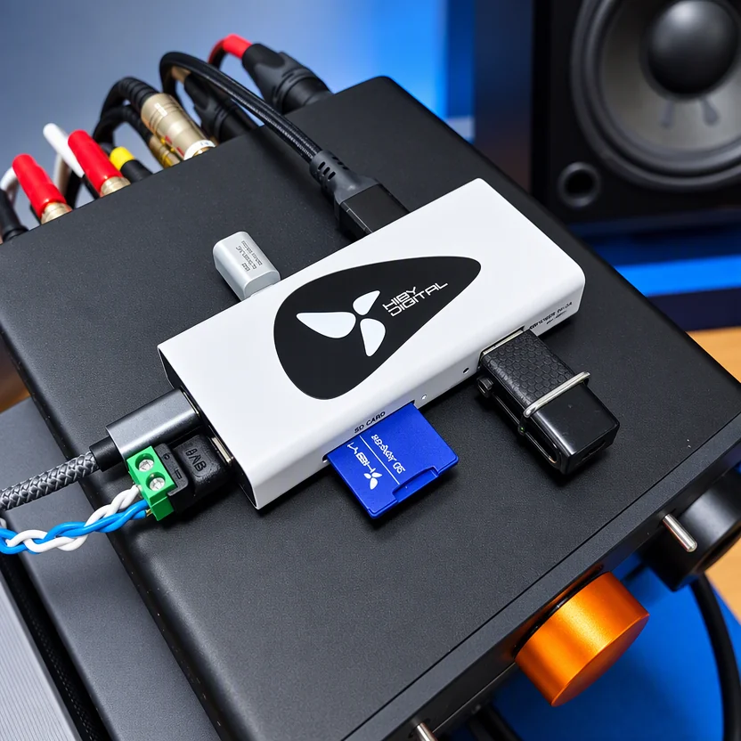

AUDIO TECH NOTES USB AUDIO
ADuM4165BRIZ คืออะไร?
ทำไม HiBy AP10 เลือกใช้ชิป Digital Isolator ตัวนี้

เวลาเราพูดถึง USB Audio หลายคนอาจคิดว่า “USB ส่งข้อมูลดิจิทัล แล้วจะมี Noise เข้ามาเกี่ยวอะไรด้วย?”
ความจริงคือสาย USB ไม่ได้เชื่อมกันแค่ข้อมูล 0 และ 1 เท่านั้น แต่ยังมีเส้นทางทางไฟฟ้าระหว่างอุปกรณ์ ทั้ง Power, Ground และสัญญาณความถี่สูง เมื่อ PC เชื่อมต่อกับ DAC โดยตรง กราวด์ของอุปกรณ์ทั้งสองฝั่งจึงสามารถเชื่อมถึงกันผ่าน USB ได้
นี่คือจุดที่ USB Isolator เข้ามามีบทบาท
หนึ่งในชิปที่ออกแบบมาสำหรับงานนี้โดยตรงคือ ADuM4165BRIZ จาก Analog Devices และเป็นชิปที่ถูกนำมาใช้ในบริบทของอุปกรณ์ USB Isolation อย่าง HiBy AP10
เข้าใจง่ายใน 30 วินาที
ADuM4165 คือชิปที่สร้าง “กำแพงทางไฟฟ้า” ระหว่าง USB สองฝั่ง
ข้อมูล USB ยังคงสามารถเดินทางข้ามกำแพงนี้ได้ แต่ไม่มีการเชื่อมต่อทางไฟฟ้าโดยตรงของ Ground ระหว่างสองด้าน
แนวคิดนี้เรียกว่า Galvanic Isolation
ผลที่ได้คือระบบสามารถตัด direct ground path ระหว่าง PC กับอุปกรณ์ USB ปลายทาง ซึ่งมีประโยชน์เมื่อระบบกำลังประสบปัญหา Ground Loop หรือสัญญาณรบกวนทางไฟฟ้าที่เดินทางผ่านการเชื่อมต่อ USB
ADuM4165BRIZ คืออะไร?
ADuM4165 เป็น USB 2.0 Digital Isolator จาก Analog Devices ในตระกูลเทคโนโลยี iCoupler
จุดสำคัญคือมันรองรับ USB 2.0 ครบทั้งสามระดับความเร็ว:
- Low-Speed — 1.5 Mbps
- Full-Speed — 12 Mbps
- High-Speed — 480 Mbps
ความสามารถรองรับ High-Speed 480 Mbps เป็นจุดต่างสำคัญเมื่อเทียบกับ USB isolator รุ่นเก่าหลายรุ่นที่จำกัดอยู่ที่ Full-Speed 12 Mbps
สำหรับ USB DAC และ USB Audio Class 2 สมัยใหม่ ความสามารถนี้ทำให้สามารถใช้งานกับอุปกรณ์ที่ต้องการ High-Speed USB ได้โดยไม่ถูกจำกัดอยู่ที่ 12 Mbps
ตัว ADuM4165BRIZ ใช้แพ็กเกจ 20-lead wide-body SOIC_IC ที่มี creepage และ clearance 8.3 mm และได้รับการระบุ isolation rating ที่ 5700 Vrms เป็นเวลา 1 นาทีตาม UL 1577
Galvanic Isolation ทำอะไรกับ USB?
ลองมองระบบปกติก่อน:
PC
→ USB Cable
→ DAC
ในกรณีนี้ PC และ DAC มีเส้นทางทางไฟฟ้าเชื่อมถึงกันผ่าน USB
เมื่อเพิ่ม isolator:
PC
→ USB
→ ADuM4165
→ Isolation Barrier
→ USB
→ DAC
ข้อมูลยังเดินทางได้ แต่ direct galvanic path ระหว่าง Ground ของสองฝั่งถูกตัดออก
สิ่งนี้อาจมีประโยชน์ในระบบที่เกิด:
- Ground Loop
- Common-mode noise
- Leakage-current path
- Noise ที่นำมาตามกราวด์หรือการเชื่อมต่อ USB
แต่ต้องเน้นว่า USB isolation ไม่ได้กำจัด Noise ทุกชนิด
หาก Noise เกิดจากภาค Analog, Power Supply หรือวงจรภายใน DAC เอง การใส่ USB isolator ไม่ได้ทำให้ Noise เหล่านั้นหายไปโดยอัตโนมัติ
แล้ว Hi-Res Audio ต้องการ USB 3.0 หรือไม่?
สำหรับเสียง Stereo โดยทั่วไป ไม่จำเป็น
ลองดูเฉพาะ raw audio payload:
24-bit / 192 kHz / Stereo
24 × 192,000 × 2
≈ 9.22 Mbps
ส่วน:
32-bit / 384 kHz / Stereo
32 × 384,000 × 2
≈ 24.58 Mbps
ตัวเลขเหล่านี้ยังต่ำกว่า raw signaling rate ของ USB 2.0 High-Speed ที่ 480 Mbps อยู่มาก
แน่นอนว่า USB มี protocol overhead และ 480 Mbps ไม่ใช่ throughput สำหรับ audio payload ทั้งหมด แต่ช่องว่างยังมากพอที่ USB 2.0 High-Speed จะรองรับ Hi-Res Stereo ได้โดยสบายในบริบททั่วไป
ดังนั้นสิ่งสำคัญสำหรับ USB Audio ไม่ใช่ว่า “ต้องเป็น USB 3.x ถึงจะเสียงดี” แต่คือ interface และอุปกรณ์ทั้งระบบรองรับ USB Audio mode และ sample format ที่ต้องการหรือไม่
ADuM4165 กับ Jitter — จุดที่ต้องแยกให้ออก
Analog Devices ระบุว่าใน High-Speed mode ADuM4165 มีการ redrive และ retime ข้อมูล USB เพื่อช่วยเรื่อง input jitter และ signal eye quality ที่ระดับ USB physical layer
นี่เป็นคุณสมบัติจริงของตัวชิป
แต่คำว่า “jitter” ตรงนี้ไม่ควรถูกนำไปสรุปทันทีว่า:
“USB isolator ลด jitter ของเสียง”
เพราะมันเป็นคนละบริบทกับ sample clock ที่ DAC ใช้ตอนแปลงสัญญาณ Digital → Analog
ใน asynchronous USB Audio สมัยใหม่ DAC มักอ้างอิง local clock ของตัวเองสำหรับการแปลงสัญญาณ และใช้ buffering/feedback ในการจัดการข้อมูลจาก USB
ดังนั้นการ retime USB PHY ของ ADuM4165 เป็นเรื่องของความสมบูรณ์ของลิงก์ USB ไม่ใช่หลักฐานว่ามันลด DAC conversion-clock jitter หรือทำให้เสียงดีขึ้นโดยตรง
ADuM4165 ส่งไฟข้าม Isolation Barrier หรือไม่?
ไม่
นี่เป็นอีกจุดที่ควรเข้าใจให้ถูกต้อง
ADuM4165 ทำหน้าที่ isolation สำหรับ USB communication แต่ไม่ได้ส่งพลังงาน VBUS จากฝั่งหนึ่งข้าม isolation barrier ไปเลี้ยงอีกฝั่งด้วยตัวมันเอง
นั่นหมายความว่าฝั่ง downstream ต้องมี power domain ของตัวเอง
ในการออกแบบ USB isolator จริง จึงมักต้องมี:
- Isolated DC/DC
- หรือ External downstream power supply
ร่วมอยู่ในระบบด้วย
นี่เป็นเหตุผลว่าทำไมเวลาเราวิเคราะห์ USB isolator ไม่ควรมองแค่ “ชิป Data Isolation” แต่ต้องดูการออกแบบภาคจ่ายไฟฝั่งปลายทางด้วย
ทำไม ADuM4165 จึงเหมาะกับอุปกรณ์อย่าง HiBy AP10?
จุดนี้ต้องแยก Fact ออกจาก Engineering Inference
ไม่พบคำอธิบายจาก HiBy ที่ระบุเหตุผลในการเลือกชิปรุ่นนี้โดยตรง
เหตุผลทางวิศวกรรมที่เป็นไปได้
แต่จากคุณสมบัติทางวิศวกรรมของตัวชิป เราสามารถอธิบายเหตุผลที่ทำให้มันเหมาะกับงานประเภทนี้ได้:
1. รองรับ USB High-Speed 480 Mbps
สำคัญมากสำหรับความเข้ากันได้กับ USB Audio สมัยใหม่ เมื่อเทียบกับ isolator รุ่นเก่าที่หยุดอยู่ที่ 12 Mbps
2. รองรับ Automatic Speed Detection
ตัวชิปสามารถรองรับ Low, Full และ High-Speed โดยอัตโนมัติ ทำให้เหมาะกับอุปกรณ์ USB หลากหลายประเภท
3. สร้าง Galvanic Isolation ได้ในชิปเดียว
ADuM4165 รวม USB transceiver, isolation, control และส่วนของ USB termination หลายอย่างไว้ในโซลูชันเดียว ช่วยลดความซับซ้อนของระบบเมื่อเทียบกับการสร้าง High-Speed USB isolation จากหลายบล็อกแยกกัน
4. มี High-Speed Data Retiming
ช่วย redrive/retime ลิงก์ USB ในระดับ physical layer เพื่อรักษา signal integrity หลังข้าม isolation barrier
5. ถูกออกแบบมาสำหรับงาน Isolation โดยตรง
Analog Devices ระบุการใช้งานไว้ทั้ง USB host/peripheral isolation, instrumentation, medical และ industrial systems
ทั้งหมดนี้ทำให้ ADuM4165 เป็นชิปที่มีคุณสมบัติเหมาะกับอุปกรณ์ USB isolation ที่ต้องรองรับ High-Speed
แต่ไม่ได้หมายความว่าเราสามารถสรุปว่า HiBy เลือกมันเพราะ “ให้เสียงดีที่สุด” โดยไม่มีหลักฐานจากผู้ผลิตหรือการวัดรองรับ
สิ่งที่มักเข้าใจผิด
“USB Isolator ทำให้เสียงดีขึ้นทุกระบบ”
ไม่จำเป็น
หากระบบมี Ground Loop หรือ electrical noise ที่เดินทางผ่าน USB การตัดเส้นทางนั้นอาจสร้างผลที่วัดหรือสังเกตได้
แต่หากระบบเดิมไม่มีปัญหาดังกล่าว ผลลัพธ์อาจแตกต่างน้อยมากหรือแทบไม่มีเลย
“USB Isolator ลด Audio Jitter”
ADuM4165 มี High-Speed USB data retiming จริง แต่เป็น jitter/signal-integrity ในระดับ USB PHY
ไม่ควรเอาไปเท่ากับ DAC sample-clock jitter
“USB 3.x ต้องดีกว่า USB 2.0 สำหรับ Hi-Res Audio”
ความเร็วบัสสูงกว่าไม่ได้แปลว่าคุณภาพเสียงสูงกว่า
USB 2.0 High-Speed มี bandwidth มากเพียงพอสำหรับ Hi-Res Stereo โดยทั่วไปอยู่แล้ว
Technical Specs — ADuM4165BRIZ
- Manufacturer
- Analog Devices
- Function
- USB 2.0 Digital Isolator
- USB speeds
- 1.5 / 12 / 480 Mbps
- USB High-Speed
- รองรับ
- Speed detection
- Automatic
- Isolation technology
- Analog Devices iCoupler
- Isolation rating
- 5700 Vrms / 1 minute
- Package
- 20-lead wide-body increased-creepage SOIC_IC
- Creepage / Clearance
- 8.3 mm
- Operating temperature
- −55°C ถึง +125°C
- High-Speed feature
- USB data redriving and retiming
- Clock
- ADuM4165 ใช้ external clock/crystal reference ทาง upstream side สำหรับ High-Speed operation
- Power isolation
- ไม่ได้ส่ง VBUS ข้าม isolation barrier ด้วยตัวเอง
สรุป
ADuM4165BRIZ ไม่ใช่ชิปที่มีหน้าที่ “แต่งเสียง”
หน้าที่หลักของมันคือทำให้ USB 2.0 สามารถข้าม isolation barrier ได้ โดยยังรองรับ Low-Speed, Full-Speed และ High-Speed สูงสุด 480 Mbps
ในระบบ Audio จุดที่น่าสนใจคือความสามารถในการตัด direct galvanic ground path ระหว่างต้นทางอย่าง PC กับอุปกรณ์ USB ปลายทาง ซึ่งอาจช่วยแก้ปัญหาที่เกี่ยวข้องกับ Ground Loop และ electrical noise ได้
ความสามารถรองรับ High-Speed, automatic speed detection และ USB data retiming ทำให้ ADuM4165 เป็นชิปรุ่นใหม่ที่เหมาะกับ USB Audio มากกว่ารุ่น isolator ที่จำกัดอยู่เพียง Full-Speed
สำหรับ HiBy AP10 สิ่งที่เราพูดได้อย่างรับผิดชอบคือ ADuM4165 มีคุณสมบัติทางวิศวกรรมที่เหมาะกับ USB High-Speed isolation อย่างมาก
ส่วนเหตุผลเชิงผลิตภัณฑ์ว่า HiBy เลือกชิปนี้เพราะเหตุใดโดยเฉพาะนั้น หากไม่มีเอกสารจาก HiBy โดยตรง เราควรแยกให้ชัดว่าเป็น Engineering Rationale ไม่ใช่ Manufacturer-confirmed Fact
นี่คือความต่างระหว่างการอ่านสเปกเพื่อการตลาด กับการทำความเข้าใจว่าอุปกรณ์ทำงานอย่างไรจริง ๆ
แหล่งข้อมูลอ้างอิง
- Analog Devices — ADuM4165 Product Page ↗
- Analog Devices — ADuM4165/ADuM4166 Datasheet Rev. B ↗Theory of Operation / Retimer and Other Features; Power Supply Options; Clock Options
- Analog Devices — EVAL-ADuM4165 User Guide (UG-2027) ↗